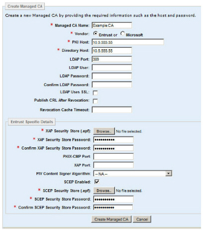
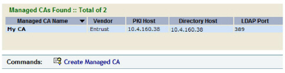

|
IdentityGuard Server 11.0 Administration Guide |
|
IdentityGuard Server 11.0 Administration Guide |
At this point, you should have one or two EPF files on the Entrust IdentityGuard server:
● XAPadministrator.epf
● IGSCEPadministrator.epf (only required if enabling SCEP digital IDs)
You must now create a managed CA configuration in Entrust IdentityGuard. This involves specifying your Security Manager CA host name or IP, and loading the EPF file or files mentioned above. Follow the instructions below.
To configure a Security Manager managed CA
1. Log in to the Entrust IdentityGuard Administration interface as the administrator.
 On the
Windows computer where Entrust IdentityGuard is installed
On the
Windows computer where Entrust IdentityGuard is installed
2. From the top menu, click Certificates.
3. Click List Managed CAs.
4. Click Create Managed CA.
5. In the Managed CA Name field, enter a globally unique friendly name for the CA.
6. For the Vendor, select Entrust.
7. In the PKI Host field, enter the fully qualified host name or IP address of the computer hosting Security Manager. This information is specified in Security Manager’s entrust.ini file, under Authority=.
8. In the Directory Host field, enter the fully qualified domain name or IP address of the computer running the LDAP directory that Security Manager is using. This information is specified in Security Manager’s entrust.ini file, under Server=.
9. In the LDAP Port field, enter the port on which the LDAP directory service is running. If you do not specify a port, the default is used (389). This port is specified in Security Manager’s entrust.ini file, under Server=.
10. This field applies only to an Entrust CA. In the LDAP User field, enter the name of the LDAP user account used to connect to the CA repository. This argument is optional. If specified, the CA operations performed when managing smart credentials use the specified LDAP account to connect to the CA repository instead of connecting anonymously. If you entered an LDAP User name, enter the password for this account in the LDAP password and the Confirm LDAP password fields.
11. This option applies only to an Entrust CA. Enable the LDAP Uses SSL option to specify that the LDAP connection must use SSL. In addition to enabling this option, you must load the SSL certificate of the LDAP server into the Entrust IdentityGuard trust store. See To import the LDAP SSL certificate or the CA certificate.
12. Enable Publish CRL After Revocation if you want to have your Certificate Revocation List (CRL) republished immediately after you revoke a user’s certificate through the Entrust IdentityGuard Administration interface. The CRL will be updated immediately with the newly revoked certificate, and Entrust IdentityGuard clients will instantly no longer trust it. If you leave Publish CRL After Revocation disabled, then the CRL is published on a scheduled interval defined in your CA, typically once every 24 hours, so there may be a delay between the time the certificate is revoked, and the time your clients no longer trust it.
There are benefits and drawbacks to enabling Publish CRL After Revocation. The benefit, as mentioned earlier, is that revocations take immediate effect; the drawback is that there is an increased load on the CA because it will be republishing its CRL more frequently.
Entrust recommends that you enable Publish CRL After Revocation unless you are experiencing performance issues.
The default is deselected.
13. In the Revocation Cache Timeout field, enter a time (in minutes) for which Entrust IdentityGuard should cache the CRL before it gets an updated the list from the Managed CA.
The conditions under which a CA will publish its CRL are determined by that CA. For example, the Entrust CA can be configured to publish a new CRL each time an administrator revokes a user certificate.
14. In the XAP Security Store (.epf) field, browse for the XAPadministrator.epf file. You should have created this Security Store in Creating an XAP credential (EPF file).
15. In the XAP Security Store Password and Confirm XAP Security Store Password fields, enter the password for XAPadministrator.epf.
16. In the PKIX-CMP Port field, enter the PKIX CMP port. If you do not specify a port, the default is used (829). This port is specified in Security Manager’s entrust.ini file, under Authority= .
17. In the XAP Port field, enter the XAP port. If you do not specify a port, the default is used (443). This information is specified in Security Manager’s entmgr.ini file, under XAPlisten=.
18. Leave the PIV Content Signer Algorithm as-is. This setting is for smart credentials.
19. If you are using SCEP, select the SCEP Enabled check box, and then complete the SCEP fields as follows:
a. In the SCEP Security Store (.epf) field, browse for the IGSCEPadministrator.epf. You should have created this Security Store in Step 7: Create SCEP credentials.
b. In the SCEP Security Store Password and Confirm SCEP Security Store Password fields, enter the password for IGSCEPadministrator.epf.
Your page should look similar to the following example.

20. Click Create Managed CA.
Your CA appears in the list. Leave the page open and proceed to the next section.
